PERASPERADASTRA
ГАЙД ДЛЯ СТУДЕНТОВMISSION TO MOTION
4 ЭТАПА И КВИЗ
Разговорное видео
Как превратить подкаст, интервью или монолог в ролик, который досматривают. Четыре этапа в том порядке, в котором ты пройдёшь их в работе: концепция, раскадровка, анимация, монтаж. В каждом примеры, сравнения и задание.
Свой подкаст, интервью, эфир школы или монолог на камеру. Все задания делаются на нём.
Иди по этапам и делай задание в конце каждого
После четвёртого этапа у тебя на руках готовый ролик, сценарий и раскадровка для портфолио.
Перед сдачей пройди квиз и чек-лист
Если пункт не отмечается, вернись к этапу по ссылке.
Про примеры
Ролики играют без звука, когда доходишь до них. Кнопка «звук» в углу включает звук у одного ролика. Оранжевая рамка отмечает работы Perasperadastra, остальное это референсы с эфиров и из презентаций курса.
PERASPERADASTRA
РАЗГОВОРНОЕ ВИДЕОВСТУПЛЕНИЕ
ФОРМАТЫ И РИТМ
Голос ведёт, картинка удерживает
Человек в кадре даёт смысл. Твоя задача сделать так, чтобы этот смысл досмотрели.
Разговорное видео держится на голосе: история, факт, мнение. Визуал работает как второй рассказчик. Он подчёркивает главное, показывает то, что сложно представить, и не даёт глазу заскучать на говорящей голове.
Шесть форматов
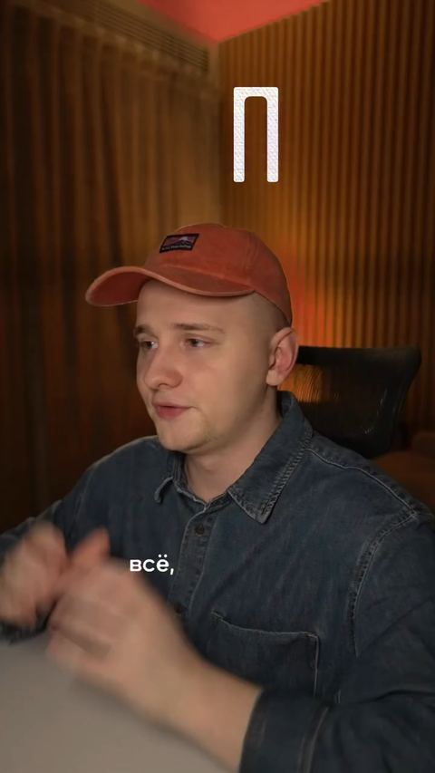
Нарезка спикера
Монолог на камеруСпикер чередуется с перебивками на красном фоне: крупная фраза, знак рубля, цифры. Субтитры идут по словам.
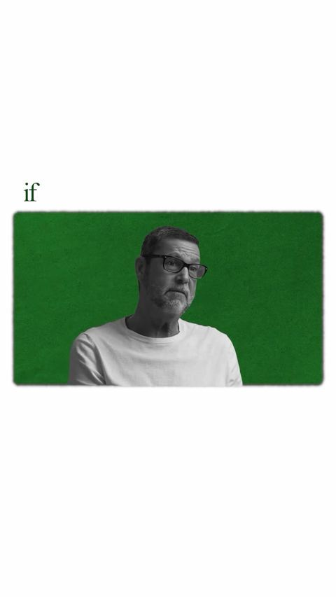
Подкаст
Фрагмент подкастаСпикер уменьшен до карточки, вокруг крупные слова. Между фразами B-roll: книга, грейдинг, город.
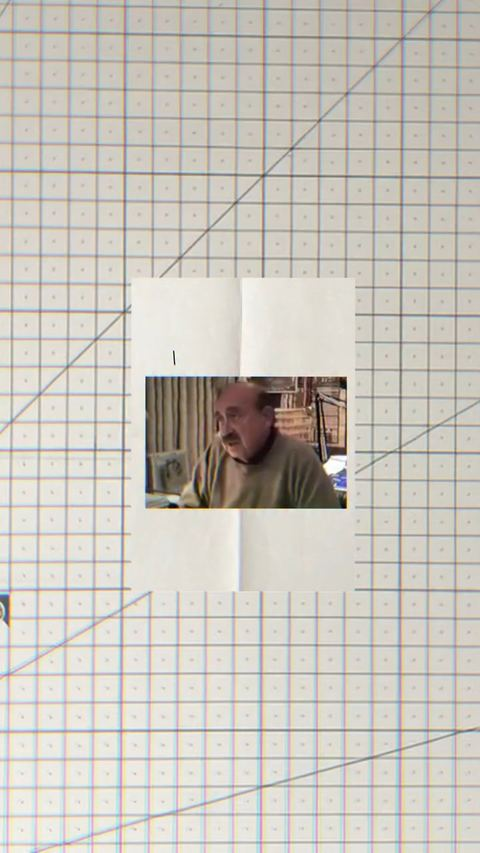
Архивное интервью
Чужой голос, своя подачаАрхивная запись то на весь кадр, то наклеена на лист. Между ними плакаты, руки, барабанщик и цитата постером.
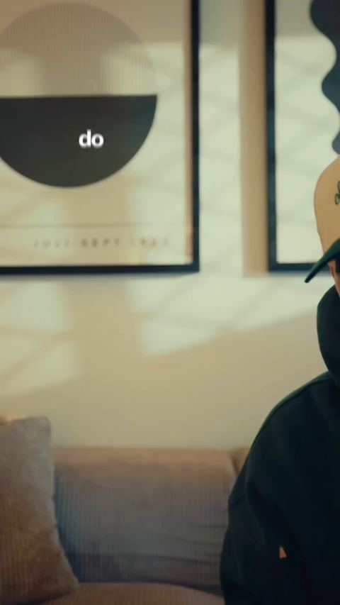
Селф-видео
Блогер о своём опытеБлогер в разных локациях, перебивки экранами кода. Слова стоят за спиной героя и встроены в пространство.
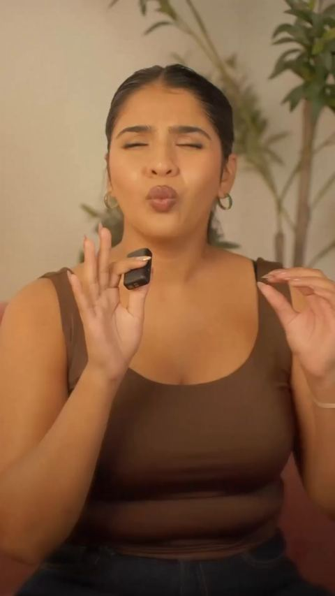
Повествование
История от первого лицаРассказ про основателя Red Bull. Спикер в одном плане, а каждый факт подкреплён вырезкой: банка, архив, коллаж.
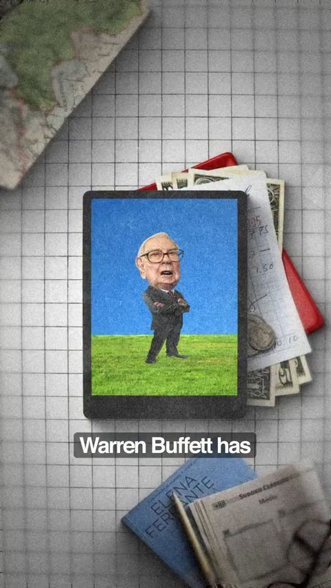
История компании
Эксплейнер без лицаГолос за кадром, спикера нет вовсе. Каждая фраза получает свою сцену-коллаж с крупным словом.
Классификация: собери формат
Любой разговорный ролик раскладывается по восьми осям. Выбери по одному значению на каждой, и внизу соберётся описание твоего ролика. Можно начать с готового рецепта.
Рецепты
ФорматКто говорит и как построен ролик
МонтажКак склеиваются планы
ПлотностьКак часто что-то меняется в кадре
ДизайнКакую роль играет оформление
ТекстЗачем текст в кадре
Анимация титровКак текст появляется
Графика и видеоНасколько графика срастается с кадром
КамераКак меняется крупность
Треугольник коммуникации
Любой ролик держится на трёх опорах. Если одна проседает, ролик ощущается пустым, даже когда анимация сделана чисто.
ИсторияЧто мы рассказываем?
Мысль, которую зритель унесёт с собой. Её выбирают на этапе 01.
КонцепцияКакая идея лежит в основе?
Визуальная метафора или приём, через который подаём историю. Её ищут на этапах 01 и 02.
РитмКак сделать это интересно?
Чередование кадров, графики и звука. Его строят на этапах 02–04.
Ритм = повтор + интервал + вариация
Ритм это чередование элементов с определённой последовательностью. Он управляет вниманием, передаёт настроение и создаёт динамику. Ниже первые 30 секунд нарезки, где спикер, графика и типографика сменяют друг друга.
Спикер в кадреГрафика, архив, B-rollКрупная типографика
СкучноСпикер 40 секунд подряд в одном плане, внизу субтитры.Глаз ничего не ждёт, палец листает дальше.
РитмПлан меняется каждые 2–5 секунд: крупнее, графика, слово на весь кадр, снова спикер.Каждая смена обещает что-то новое.
Обратная ошибка тоже бывает: всё мигает, двигается и звенит, и зритель теряет смысл. Дизайнер всегда ищет баланс между «скучно» и «сложно».
PERASPERADASTRA
РАЗГОВОРНОЕ ВИДЕОЭТАП 01
КОНЦЕПЦИЯ И ИСХОДНИК
Концепция и исходник
Плохой фрагмент не спасёт никакая анимация. Хороший смотрят даже без неё.
На этом этапе ты решаешь, что рассказываешь и через какую идею. Из часового разговора в ролик идёт 30–90 секунд, и выбор этого куска решает больше, чем всё остальное.
Погрузись в тему
Посмотри 10–20 похожих роликов
Отметь, что работает, а что нет: где ты досмотрел до конца, где пролистал и почему.
Выбери музыку заранее
Её ритм определит темп анимации и монтажа. Менять трек в конце значит переделывать синхрон.
Ответь на три вопроса
Что делает эту историю особенной? Какую проблему или интерес зрителя она закрывает? Кто аудитория: студенты, профессионалы, широкая публика?
Что делает фрагмент сильным
01Законченная мысль
У куска есть начало и вывод. Зритель без контекста понимает, о чём речь.
02Крючок в первой фразе
Вопрос, цифра, спорное утверждение. Первые три секунды решают, досмотрят ли.
03Конкретика
Имена, цифры, случаи. Их легко визуализировать, в отличие от общих слов.
04Эмоция
Смех, спор, признание, удивление. Живая интонация держит лучше гладкой.
Плохо«Ну, вот, значит, мы тогда как раз начали думать про то, как в целом строить работу с клиентами…»Три секунды ушли на разгон. Зритель уже листает.
Хорошо«Первый заказ я сделал за три тысячи рублей. Через год за тот же проект брал в двадцать раз больше».Цифра и обещание истории. Хочется узнать, что случилось за год.
Нарезка спикера
Perasperadastra · ценообразованиеОдна тема, один вывод
Ролик держится на одной мысли: объективной цены нет. Речь плотная, паузы вырезаны, а главные фразы вынесены на красные перебивки крупным текстом.
Повествование
Референс · история Red BullНачало с даты и героя
Рассказ стартует сразу с сути: год, человек, что он сделал. Никаких «привет, сегодня расскажу». Сюжет сам тянет к развязке, а вырезки подтверждают факты.
Хук: первые 3 секунды
Первые 3 секунды решают всё.
Вопрос«Почему у одних дизайнеров по три заказа в месяц, а у других очередь?»
Зритель начинает отвечать про себя и остаётся узнать ответ.
Конфликт«Объективной цены на дизайн не существует»
Спорное утверждение, с которым хочется поспорить или согласиться.
СтранностьНеожиданный объект, звук или поведение
Мозг цепляется за то, что не укладывается в привычную ленту.
Визуальный ударСильный кадр до первого слова
Яркая графика, резкое движение, крупная типографика на весь экран.
Формулы сценария
Сценарий это управление вниманием и эмоцией. Две формулы из рекламы хорошо работают и в разговорном ролике: вместо покупки в конце просьба сохранить, подписаться или перейти к полному выпуску.
AIDA
Задача
В ролике
Attention
Остановить человека и вырвать из скролла
Хук
Interest
Удержать и заставить смотреть дальше
Боль: зритель узнаёт себя
Desire
Показать ценность и вызвать «хочу»
Решение и результат
Action
Привести к конкретному шагу
Призыв: сохранить, подписаться, перейти
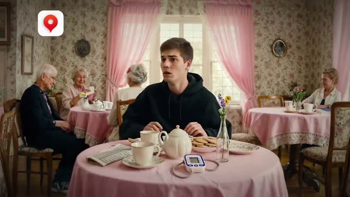
AIDA
Путь зрителя в головеРолик собран по AIDA: хук, боль, решение с результатом и призыв к действию.
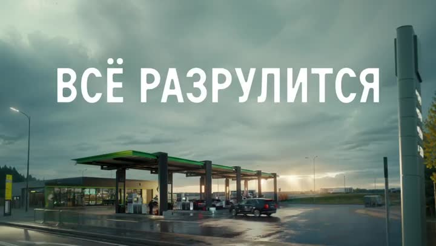
Формула
Боль → решение → результатСначала человек узнаёт себя, потом видит решение, потом хочет результат.
Три акта
Трёхактная структура повторяет логику жизни: проблема, преодоление, изменение. В кино на неё уходит два часа, в блоге одна минута, но логика та же.
Акт 1 · ЭкспозицияВводим в контекст
Ситуация автора, его мир, цели или проблемы. Аудитория узнаёт себя и начинает сопереживать.
«Год назад я работала на стабильной работе, но чувствовала, что это не моя жизнь».
Акт 2 · КонфликтПроблемы, сомнения, ошибки
Каждая новая трудность сложнее предыдущей: это эскалация. Без конфликта история плоская.
«Я уволилась, но клиентов не было, и я начала сомневаться, правильно ли поступила».
Акт 3 · РазвязкаРезультат и вывод
Не просто решение проблемы, а изменение героя: уверенность, понимание себя, новый взгляд.
«Через год я построила своё дело и поняла, что главное не бояться менять жизнь».
Концепция: устрой гонку
Дизайнер должен устроить гонку между концепциями.
Не останавливайся на первой идее. Придумай две-три подачи одного фрагмента и сравни их по треугольнику: насколько ясно рассказывают историю, насколько оригинальна идея, какой ритм дают.
Вариант AБуквально
Спикер и крупная типографика на ключевых словах. Быстро и надёжно.
Вариант BЧерез материал
Архив, интерфейсы, коллаж из реальных предметов темы.
Вариант CЧерез метафору
Одна сквозная идея: история бренда как полёт, кризис как игровой автомат.
12 креативных приёмов
Креативный приём превращает обычную идею в заметную. Смысл тот же, меняется подача. Примеры из рекламы, но каждый приём работает и в разговорном ролике: это готовые заходы для «гонки концепций».
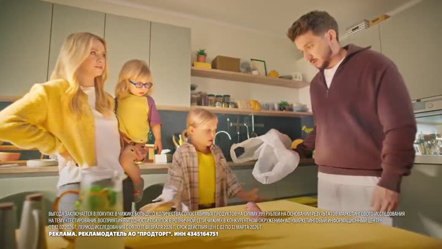
Сравнение
До и послеКонтраст показывает ценность сам, объяснять ничего не нужно.
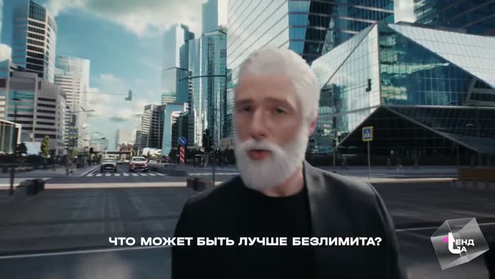
Гипербола
Преувеличение до пределаНеожиданная подача выделяет ролик среди остальных.
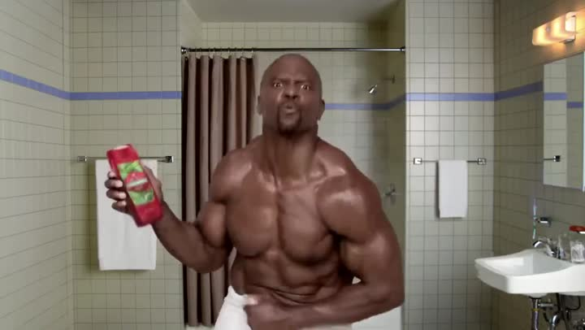
Абсурдная альтернатива
Жизнь без решенияНелепый вариант без продукта делает нормальное решение очевидным.
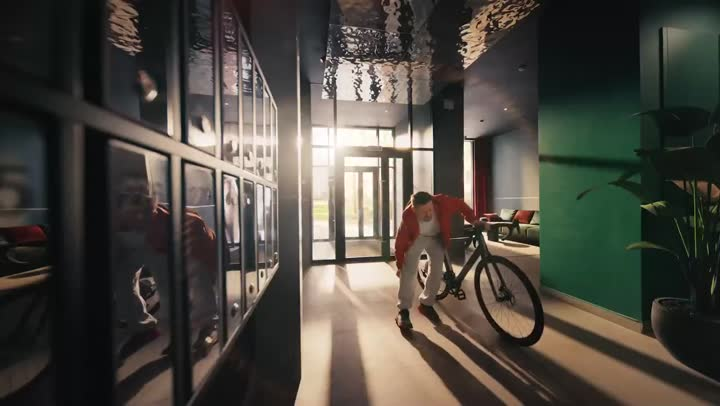
Последствия
Что будет, если…Зритель видит результат и хочет к нему прийти или избежать его.
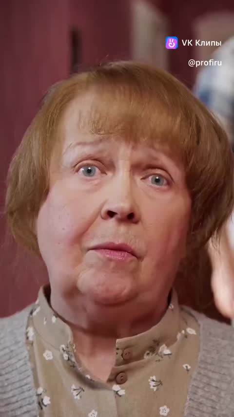
Тестимониал
Опыт другого человекаТот, кто уже получил результат, убеждает лучше автора.
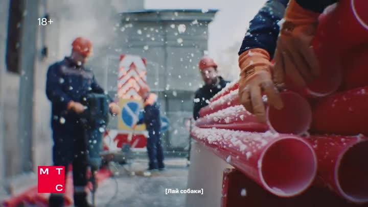
Аналогия
Сложное через знакомоеПростое сравнение объясняет, как это работает.
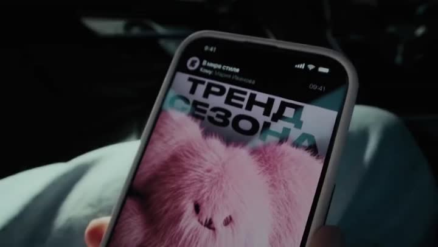
Часть истории
Кусок вместо целогоЗритель сам достраивает сюжет и сильнее вовлекается.
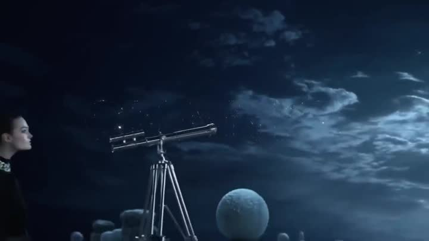
Гиперболизированный мир
Мир на максимумЯрко и запоминающе. Главное, чтобы выглядело как шутка, а не ложь.
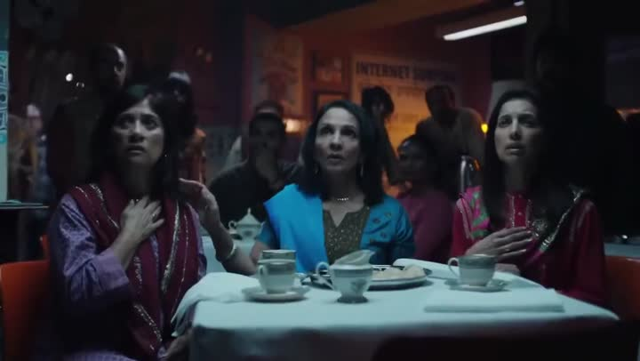
Реклама категории
Зачем это вообще нужноРаботает, когда аудитория ещё не понимает саму потребность.
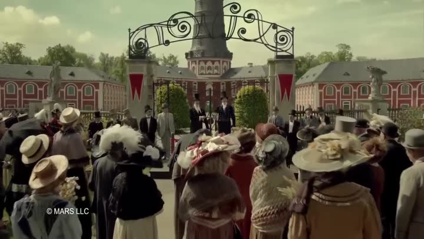
За кадром
Скрытый процессКак всё создаётся изнутри. Вызывает интерес и доверие.
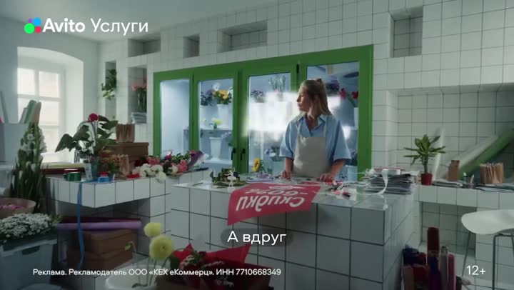
Показ аудитории
Узнай себяЛюди, для которых это сделано, их ситуации и образ жизни.
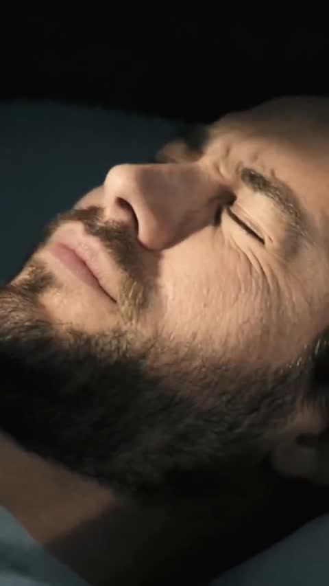
Буквальная визуализация
Метафора буквальноИдея становится простой, яркой и запоминающейся.
Расшифровка и бумажный монтаж
Текст с таймкодами это карта ролика. По ней ты режешь, пишешь сценарий анимации и ставишь синхрон.
Premiere Pro
Панель Text → Transcribe. Удаляешь слова в тексте, и монтаж обрезается вместе с ними.
DaVinci Resolve
Транскрипция клипа в медиапуле или субтитры из аудио на таймлайне.
Whisper и сервисы
Если монтажка не умеет, расшифруй отдельно и выгрузи в SRT с таймкодами.
Вычеркни лишнее в тексте
Разгоны, повторы, «ну», «как бы», оговорки, вторые попытки сказать ту же фразу.
Прочитай вслух то, что осталось
Если мысль понятна и звучит естественно, это твой сценарий. Если нет, верни нужную связку.
Проверь имена и цифры руками
Автоматическая расшифровка в них ошибается, а из этого текста потом сделаешь субтитры.
Задание этапаВыбери фрагмент 30–90 секунд, сделай расшифровку и опиши три концепции подачи.
Для каждой концепции одна строка: идея и главный визуальный приём. Выбери одну и объясни выбор через треугольник коммуникации.
Если при просмотре раскадровки видео уже «слышится» и «движется», концепция живая.
Раскадровка показывает, как история развивается в динамике, вскрывает слабые места до продакшна и экономит больше всего времени. Без неё анимация часто выходит хаотичной: переходы резкие, главное не подчёркнуто.
Проверка сценария
Всё ли визуализируется, нет ли пустых мест.
Контроль ритма
Видно, где сцены слишком длинные или короткие.
Общий язык
Раскадровку понимают дизайнер, аниматор и заказчик.
Экономия
Ошибку проще исправить в скетче, чем в After Effects.
Пять шагов
Разбей сценарий на сцены
Одна сцена это одна мысль. Оптимально 8–12 сцен на минуту. Для каждой пропиши действие, текст или голос, эмоцию и задачу: зачем сцена существует.
Подбери метафоры
По 1–2 образа на сцену. Переведи смысл в действие или объект: «рост бренда» может стать деревом, лестницей, светом. Ищи контраст: доверие можно показать не рукопожатием, а мостом, который держит двух людей.
Собери референсы
2–3 на сцену, с подписью, что берёшь: «композиция по центру», «свет из-за спины», «движение push-in». Кадры из кино ищи на flim.ai, frameset.app, film-grab.com.
Нарисуй эскизы
От руки, в Figma или Procreate. В кадре главное действие, ключевой элемент, направление движения и подпись с таймингом. Цель не красиво, а понятно.
Проверь ритм
Есть ли завязка, развитие, кульминация и финал? Нет ли подряд однотипных планов? Собери черновой аниматик из кадров с музыкой: он сразу покажет, где скучно.
Правило проверки: раскадровку должен понять человек, который не писал сценарий.
Начни с текстовой иерархии
В разговорном ролике раскадровка растёт из слов. Внутри каждой сцены реши, какие слова станут акцентом, выстрой иерархию и разложи фразы по кадрам. Так сразу видно, какие сцены потребуют сильного визуального решения.
Кадр 1Резкий акцентОдно слово на весь кадр останавливает скролл.Кадр 2ИерархияСвязка мелко, смысл крупно.Кадр 3ВыводГлавное слово цветом, остальное поддерживает.
Фраза «Стоп, хватит сохранять туториалы по AI, тебя это никак не прокачает» разложена на три кадра. Короткая фраза работает как акцент, крупная типографика усиливает мысль, а разбивка на кадры управляет вниманием.
Таймкод
Фраза
Что в кадре
Приём
00:00
«Первый заказ я сделал за три тысячи рублей»
Спикер крупно, «3 000 ₽» вылетает рядом с лицом
Цифра типографикой
00:03
«Через год за тот же проект брал в двадцать раз больше»
Цифра перещёлкивается до «60 000 ₽», спикер уходит в карточку
Смена композиции
00:07
«Дело было не в навыках»
Пустой кадр, одно слово «навыки» перечёркнуто
Типографическая пауза
00:10
«Я просто перестал продавать часы»
Циферблат, стрелки которого превращаются в знак рубля
Метафора
Пример условный. В своей таблице следи, чтобы в столбце «Приём» не стояли подряд три одинаковых.
Усилители сюжета
От типографики переходим к образам. Одну и ту же фразу можно раскрыть очень по-разному, поэтому пробуй несколько вариантов.
Метафора«Тебя это никак не прокачает»
Обратная эволюция: человек превращается обратно в обезьяну. Образ показывает отсутствие роста без практики.
Фраза выложена клавишами клавиатуры. Самый быстрый путь, когда метафора не нужна.
Игровая отсылка«Сложность проектов растёт»
Механика Angry Birds: с каждым уровнем конструкция сложнее. Знакомая игра объясняет без слов.
Ещё усилители
Контекст, мемы и визуальный язык интернета, объекты и предметы, случайные образы, атмосфера, игровые отсылки, инфографика.
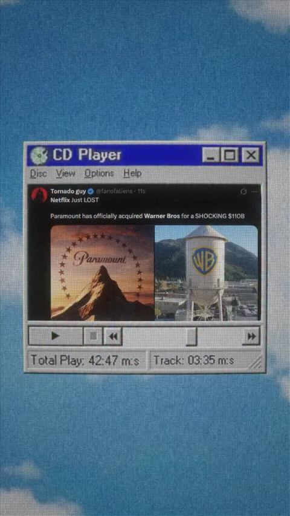
Метафора
Новость в старом плеереСделка подана через окно плеера из 90-х, график «медленного падения», пачки денег.
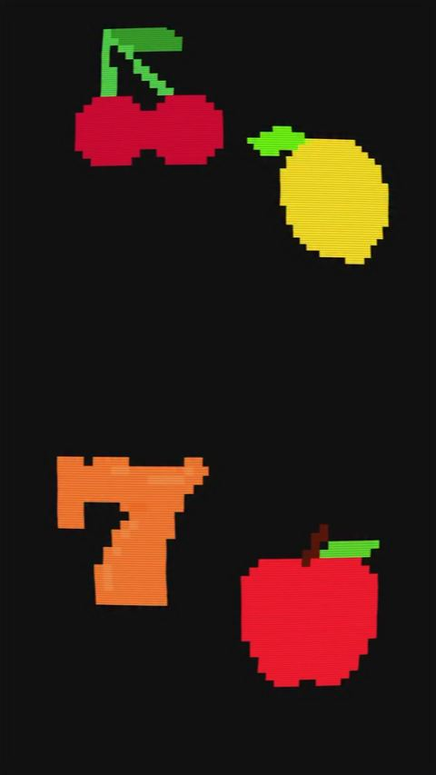
Perasperadastra
Шрифтовая лудоманияВыбор шрифта как игровой автомат: барабаны, свайпы, джекпот.
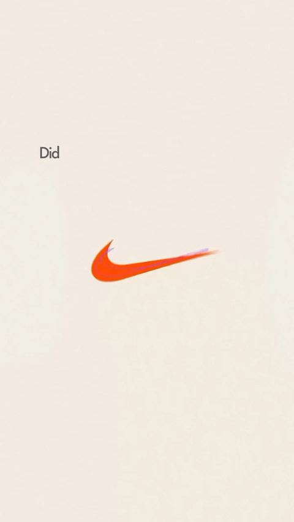
Метонимия
Nike одной галочкойГалочка и слоган возвращаются как опорные образы между кадрами спорта.
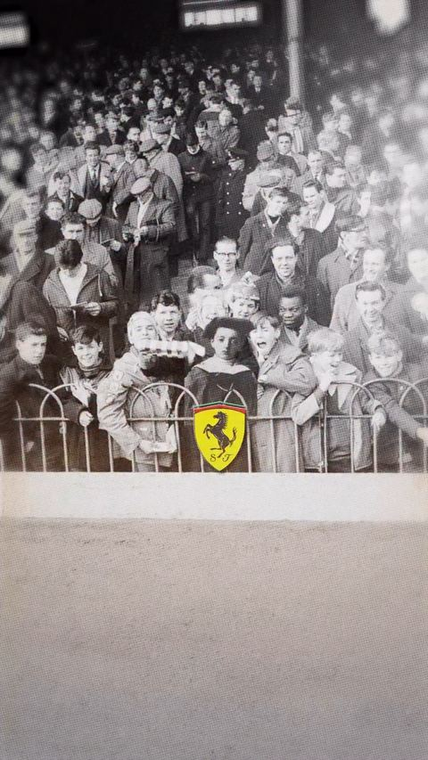
Архив
Ferrari через архивАрхивные фото и красные плашки с годами. Хронология видна даже без звука.
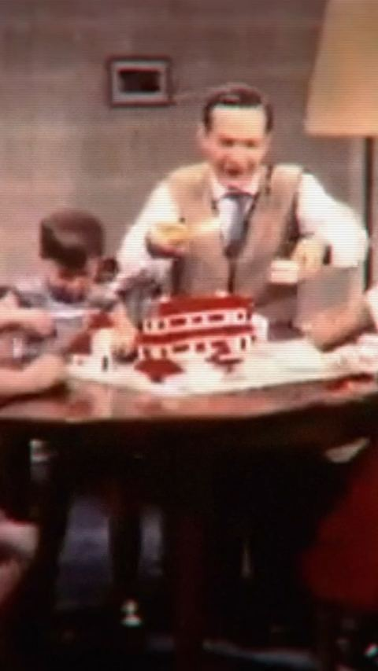
Архив
Lego: игрушка или искусствоХроника и наборы, поверх слова курсивной антиквой.
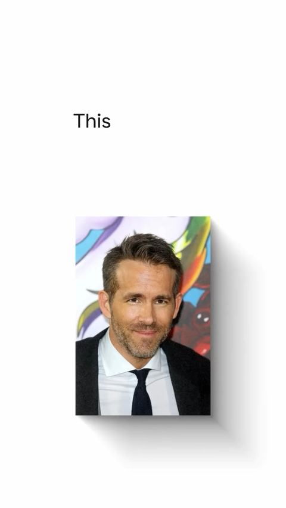
Типографика + образ
Герой карточкойБелое поле, слова по одному, точечные метафоры: шахматный король, прожектор.
Визуальные паузы
Не каждая сцена должна быть сложной метафорой. Простые кадры дают передышку между насыщенными сценами, держат ритм и фокусируют внимание на самой мысли.
Типографические паузы
Одно-два слова на чистом фоне. Зритель успевает прочитать и выдохнуть.
Кадры с персонажем
Герой как точка внимания: спикер, иллюстрированный персонаж, рука в кадре. Подача становится живой.
Контраст между кадрами
Соседние кадры должны отличаться хотя бы одним параметром. Инструменты: размер, расположение, цвет, форма объекта, форма текста, ракурс. В каждой паре слева кадр, справа следующий за ним.
МасштабТот же мотив, другой размер: много мелких, затем один огромный.КрупностьОбщий план даёт контекст, крупный усиливает акцент.ПлотностьЗаполненный кадр, затем пустой с одним объектом.ЦветСоседние сцены в разных цветовых решениях.ТипографикаИмя курсивной антиквой, дата огромным гротеском.
Раскадровка по планам
наведи курсор
Шесть планов в одной подставке
Сзади дальний план с крошечной фигурой на горизонте, спереди деталь: один глаз. Наведи на кадр, и он встанет, а соседние разойдутся. Так и в раскадровке: каждый следующий кадр меняет крупность.
ДальнийОбщий2-й средний1-й среднийКрупныйДеталь
Монтаж по Соколову: чередуй крупности, это самый простой лайфхак для ритма. Например: крупный → 1-й средний → дальний → деталь → общий.
План
Что показывает
Когда ставить
Дальний
Место целиком
Вход в историю, смена локации
Общий
Героя и окружение
Контекст: где и с кем
Средний
Героя по пояс или по колено
Действие, жесты, основная часть разговора
Крупный
Лицо или предмет
Эмоция и акцент
Деталь
Фрагмент: глаза, кнопка, текстура
Самый сильный акцент, перебивка
Композиционные шаблоны
Шаблоны показывают, где ставить текст и графику относительно головы спикера. Бери их как сетку для раскадровки и чередуй, чтобы соседние кадры отличались. Включи зоны интерфейса: красным отмечено то, что перекроют подпись, кнопки и шапка площадки.
01 · Крупный планСлово над головойОдно ключевое слово в верхней трети, спикер ниже центра. Не залезай на лоб и держи отступ от шапки площадки.02 · Правило третейТекст в свободной третиСпикер смещён на треть, текст в пустой части кадра. Пусть спикер смотрит или жестикулирует в сторону текста.03 · ГлубинаСлово за головойКрупное слово стоит за спиной и частично перекрыто головой. Нужна маска (Roto Brush, вырезка). Выбирай короткое слово: оно читается даже частично.04 · СубтитрыПод подбородком1–4 слова по центру, выше нижней трети: снизу подпись и кнопки площадки. Ключевое слово выдели цветом.05 · ЖестОбъект у жестаИконка, цифра или предмет появляется рядом с рукой или по направлению взгляда. Графика продолжает движение спикера.06 · КарточкаСпикер в карточкеВидео уменьшено и стоит ниже, сверху заголовок. Удобно, когда нужно много текста или графики рядом с лицом.07 · СплитСверху тема, снизу спикерВерх показывает то, о чём речь: цифру, скриншот, B-roll. Подходит для сравнений и примеров.08 · ВырезкаСпикер на графикеФон убран, спикер стоит на цвете или коллаже. Сразу задаёт стиль ролика и выделяет рубрику.09 · ПеребивТолько типографикаСпикера нет, голос за кадром. Для главной мысли и визуальной паузы.
Карточка
Подкаст в карточкеСпикер собран в маленький кадр, поле отдано словам. Карточка чередуется с полноэкранным B-roll.
Микс композиций
Интервью как коллажВидео то на всё поле, то наклеено на лист, то спрятано под плакат.
Текст за героем
Слова в пространствеСлова стоят за спиной спикера, перебивки экранами кода дают передышку от лица.
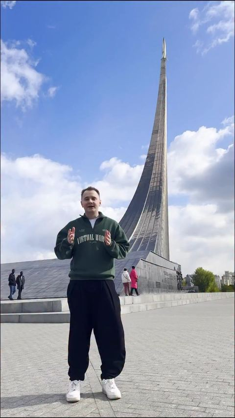
Perasperadastra
Кейс Honkai и ВДНХТипографика, интерфейс бота, 3D-карта, фото со стенда и спикер у монумента в финале.
Чего избегать
ПерегруженоШесть объектов, четыре слова и два цвета спорят за внимание.Взгляд мечется, мысль не считывается.
ЧитаетсяСпикер, одна фраза и один акцент.За секунду понятно, что главное.
Правило 1Один главный элемент
В каждом кадре заранее реши, куда смотрит зритель. Всё остальное этому подчиняется.
Правило 2Не больше трёх приёмов
Шрифт, цвет и движение уже три. Четвёртый приём обычно лишний.
Правило 3Оставь воздух
Пустое место вокруг слова делает его громче. Плотность держи для отдельных сцен.
Принципы хорошей раскадровки
Одна мысль, одна сцена.
Динамика внутри: даже статичный кадр несёт импульс, взгляд, линию, направление.
Ритм крупностей: общий → средний → крупный.
Паузы: пустой кадр это момент восприятия.
Фокус: в каждом кадре понятно, что главное.
Последовательность: движения, цвета и формы логично переходят из кадра в кадр.
Нейросети в пайплайне
Чистый лист. Готового решения нейросеть редко даёт, но первые образы найти помогает.
Образы. Уникальные объекты, которые долго собирать из стоков.
Персонаж. Свой визуальный герой делает рубрику узнаваемой.
Композиция. Быстрые скетчи, чтобы оценить сцену до разработки.
Собери айдентику ролика: шрифты, цвета, приёмы. Важно не только сделать красивые кадры, но и придумать стиль, который держится от первой сцены до последней.
Задание этапаСобери раскадровку на 8–15 кадров в Figma.
Начни с текстовой иерархии, подбери 1–2 образа и 2–3 референса на сцену. Используй минимум три композиции и хотя бы одну визуальную паузу. Положи кадры в ряд и проверь, что соседние отличаются.
PERASPERADASTRA
РАЗГОВОРНОЕ ВИДЕОЭТАП 03
АНИМАЦИЯ И ТИПОГРАФИКА
Анимация и типографика
В моушене текст живёт на экране секунды. Его надо считать мгновенно.
В разговорном ролике типографика главный инструмент: она выносит смысл, задаёт ритм и держит стиль. Текст здесь почти всегда заголовочный и краткий.
Шесть правил типографики в моушене
Читаемость важнее всего
В статике у читателя сколько угодно времени, в моушене секунды. Если зритель не успевает прочитать, текста слишком много или он слишком быстро уходит.
Сначала статика, потом движение
Кадр должен работать до анимации. Кривой кернинг, слабую иерархию и плохой контраст с фоном движение не спасёт.
Движение тоже иерархия
В статике иерархию задают размер, цвет и начертание. В моушене добавляется движение: то, что двигается, притягивает взгляд. Анимируй главное, а не всё подряд.
Контраст движения и покоя
Если двигается всё, глазу не за что зацепиться. Иногда сильнее всего оставить ключевое слово неподвижным, пока вокруг всё движется.
Типографика работает со звуком
Текст, который появляется в момент произнесения слова или на бите, ощущается профессионально. Рассинхрон зритель чувствует как «дёшево».
Текст и графика не конкурируют
Реши заранее, кто главный в кадре: текст на чистом фоне или текст как подпись к картинке. Если они борются, проигрывают оба.
Не собраноРазреженный трекинг, слова разбросаны, низкий контраст с фоном.Анимация это не спасёт: читать по-прежнему трудно.
СобраноПлотный кернинг, ясная иерархия, контраст с фоном.Кадр работает ещё до анимации.
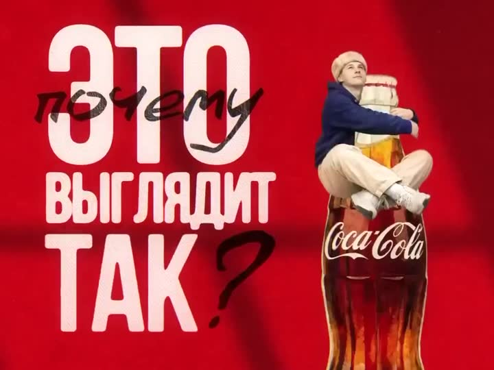
Движение = иерархия
Анимируй главноеКаждый кадр строится вокруг одного крупного слова, остальное поддерживает его.
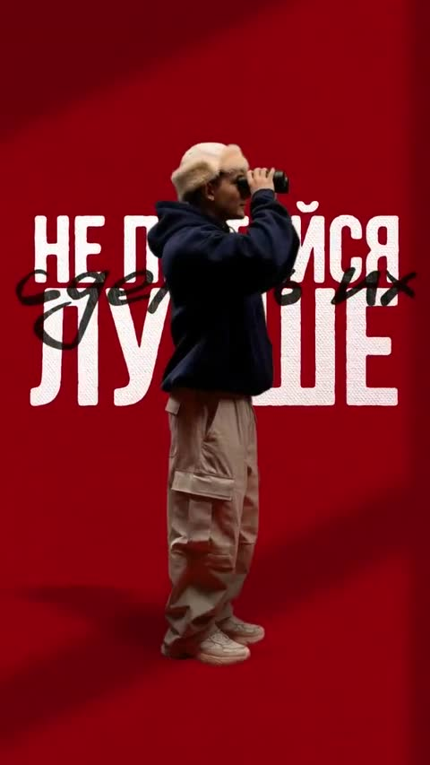
Типографика + звук
Слово на звукСлова и объекты появляются ровно в момент произнесения. Включи звук.
Как может появляться текст
Девять базовых способов. Все анимации живые и крутятся по кругу. Под каждой подписано, когда способ работает и как собрать его в After Effects.
каждоесловонасвоёмзвуке
01 · По словамСлово на звукБаза для субтитров и нарезок: слово появляется, когда его произносят.AE: Text → Animate → Opacity 0, Range Selector по словам (Based On: Words), ключи на Start.
печатаю по буквам
02 · ПечатьПо буквам с кареткойЦитаты, поиск, интерфейсы, переписка. Хорошо ложится на звук клавиатуры.AE: пресет Typewriter или Opacity 0 с Range Selector по буквам, Start от 0 до 100% линейно.
из-заКРАЯ
03 · Из маскиВыезд из-под краяЧистый «журнальный» вход для заголовков. Строки выезжают по очереди.AE: Position Y со смещением вниз, сверху маска или track matte по габариту строки, Easy Ease In на финише.
60К
04 · Масштаб с отскокомЦифра влетаетЦифры и короткие акценты. Отскок даёт ощущение веса.AE: Scale 0 → 110 → 100 за 8–10 кадров, в Graph Editor резкий выход и мягкий финиш.
фокус
05 · Из размытияПроявлениеСпокойные, атмосферные фразы и переходы между сценами.AE: Animator Blur + Opacity, Range Selector по буквам, можно Randomize Order.
ТРЕКИНГ
06 · ТрекингБуквы сходятсяПремиальная, кинематографичная подача названий и вывода.AE: Animator Tracking Amount от большого значения к 0 вместе с Opacity, медленный изинг.
дело не в навыках,а в цене
07 · МаркерПодсветка ключевогоТекст уже на экране, а акцент добавляется на ударном слове.AE: шейп-прямоугольник под словом, Scale X от 0 с Anchor Point слева или Trim Paths у толстой линии.
3 000 ₽60 000 ₽
08 · ПерещёлкиваниеБыло → сталоСравнения и рост: одно значение уезжает, другое встаёт на место.AE: два слоя в маске, Position Y в противофазе. Для счётчика Slider Control и выражение Math.round().
БОЛЬШЕ
09 · УдарАкцент на ударном слогеОдно слово в кульминации. Работает, только если таких моментов в ролике мало.AE: Scale 160 → 100 за 3–4 кадра точно на слоге, короткий shake позиции и Motion Blur.
Правило 12–3 способа на ролик
Один основной для субтитров и один-два для акцентов. Девять способов в одном ролике выглядят как каталог пресетов.
Правило 2Вход мягкий, выход быстрый
На входе Ease Out: быстро стартует и мягко садится. Уход в 1,5–2 раза короче входа, чтобы не задерживать следующий кадр.
Правило 3Способ под смысл
Удар для кульминации, печать для цитат, маркер для акцента внутри фразы. Не выбирай анимацию только потому, что она красивая.
Заголовок в кадре
Акценты внутри фразы
Не больше двух стилей в одном заголовке. Цвет, шрифт и размер сразу дают хаос.
Все слова стоят на одной базовой линии.
Два начертания должны отличаться сразу, иначе выглядит как ошибка.
Тонкий курсив и контур проверяй на телефоне и на фоне.
Шрифтовая пара
Акцидентный шрифт для акцентов, наборный для субтитров.
В ролике не больше 2–3 шрифтов.
Пара должна явно различаться. Две гарнитуры одной семьи читаются как одна.
Крупный кегль: интерлиньяж 1.1–1.2 вместо обычных 1.3.
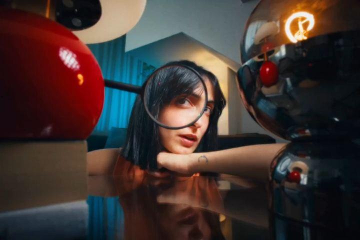
Текст за героем
Огромные словаСлова стоят позади героини и перекрываются ею. Приём один, но в каждом плане решён по-новому.
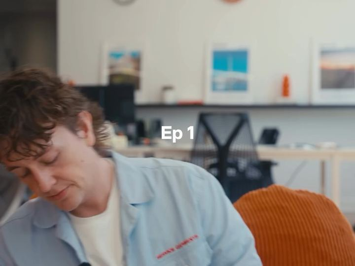
Слово за словом
Один кадр, одно словоАрхивные фото и слова по одному на белом поле. Ритм задаёт сама речь.
Сборка в After Effects
Композиция под площадку
Для Reels, Shorts и TikTok 1080×1920, частота кадров как у исходника.
Подложка и маркеры
Черновой монтаж внизу, маркеры на ключевых словах по таймкодам сценария.
Прекомпозиция на каждую сцену
Одна строка раскадровки, одна прекомпозиция с понятным именем: «03_цифра_60к».
Стиль один раз
Шрифты, цвета и субтитры задай в первой сцене и копируй дальше.
Сначала грубо, потом детали
Пройди ролик целиком простыми движениями, проверь ритм, потом изинги и мелочи.
Что перекрывает интерфейс
Снизу подпись, ник и описание.
Справа кнопки лайка и комментариев.
Сверху название площадки.
Где держать главное
Лицо, субтитры и акценты в центральной части кадра.
Субтитры выше нижней трети.
Направляющий слой с интерфейсом площадки, выключенный на рендер.
Синхрон: самое важное
Фраза и кадры появления графики при 25 к/с
Черезгодзатотжепроектбралвдвадцатьразбольше
Цифра влетает на ударном слоге «двадцать», а не на начале фразы. Акцент «больше» ловит второе движение: укрупнение кадра.
Маркеры на ударных слогах
Ставь их на слое звука во время воспроизведения, потом двигай по волне.
Движение чуть раньше слова
Анимации нужно 2–4 кадра на разгон, тогда пик движения совпадёт со звуком.
Субтитры порциями по 1–4 слова
Слово появляется, когда его произносят, не раньше.
Ритм
Референс · история компании + ритмСлова выходят ровно со звуком
Короткие фразы ложатся на кадры спорта и рекламы в момент, когда их произносят. Смена плана совпадает с акцентом, и монтаж звучит как ритмичный текст.
Задание этапаОживи раскадровку в After Effects и поставь синхрон.
Сначала собери каждую сцену в статике и проверь читаемость с телефона. Потом анимируй только главное и подгони ключи под ударные слоги.
PERASPERADASTRA
РАЗГОВОРНОЕ ВИДЕОЭТАП 04
МОНТАЖ И ПЕРЕХОДЫ
Монтаж и переходы
Монтаж это про принципы, а не про программы.
На этом этапе ты склеиваешь речь, графику и звук в одно движение. Резка держит темп речи, переходы связывают кадры, звук собирает всё вместе.
Как резать говорящую голову
Приём
Что делает
Когда
Jump cut
Склейка внутри одного плана, убирает паузу или слово
Базовая резка нарезок, каждые несколько секунд
Punch-in
После склейки кадр увеличен на 10–20%
Маскирует скачок и подчёркивает фразу
J-cut и L-cut
Звук начинается раньше картинки или тянется после неё
Переходы между спикером и графикой
Перебивка
Голос продолжается, в кадре графика или B-roll
Прячет склейку и показывает, о чём речь
ПлохоСклейка посреди слова или на вдохе, рот спикера прыгает.Зритель слышит разрыв, даже если не понимает, что не так.
ХорошоСклейка на границе фраз, вдохи убраны, кадр укрупнён.Речь звучит как сказанная на одном дыхании.
Переходы: клей между кадрами
Думай о переходах как о логических связках: каждый мотивирован сценарием. Большинство переходов стремятся стать невидимыми.
По движению объекта
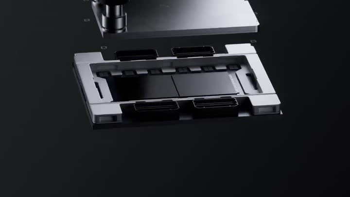
Вращение объекта
Поворот продолжаетсяКадр заканчивается вращением, следующий подхватывает это движение. Спроси себя, куда объект естественно повернёт дальше.
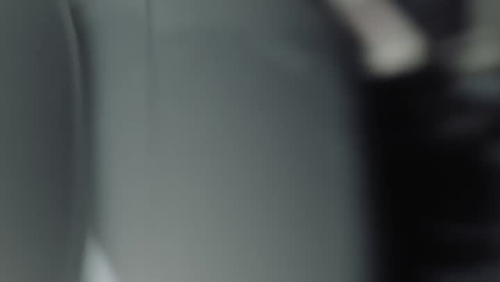
Зум объекта
Приближение с новой крупностьюОбъект приближается к камере, следующий кадр продолжает движение с другим ракурсом или скоростью.
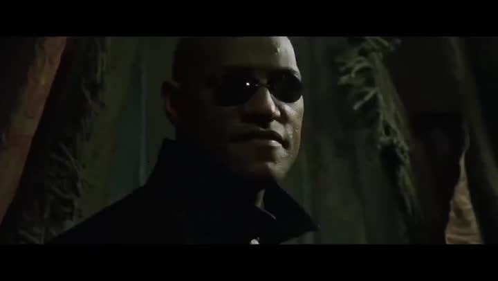
Слайд объекта
Вектор движенияГлавный объект продолжает движение во втором кадре. Определи вектор и продолжи его.
По движению камеры
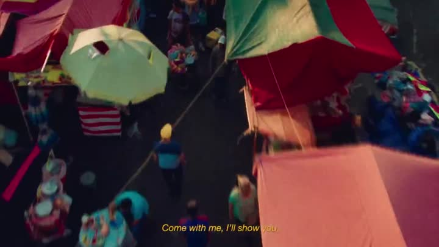
Вращение камеры
Поворот открывает новоеВращение камеры показывает новые детали или локацию. Реши, что именно оно должно открыть.
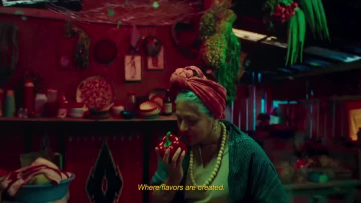
Зум камеры
Зачем приближаемсяЗум показывает деталь или погружает в окружение. Определи, какой аспект сюжета он раскрывает.
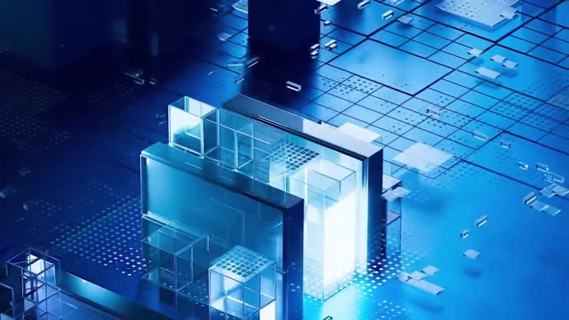
Слайд камеры
Новая локацияКамера смещается и открывает следующее место. Иди по порядку чтения: слева направо, снизу вверх.
По композиции и другие
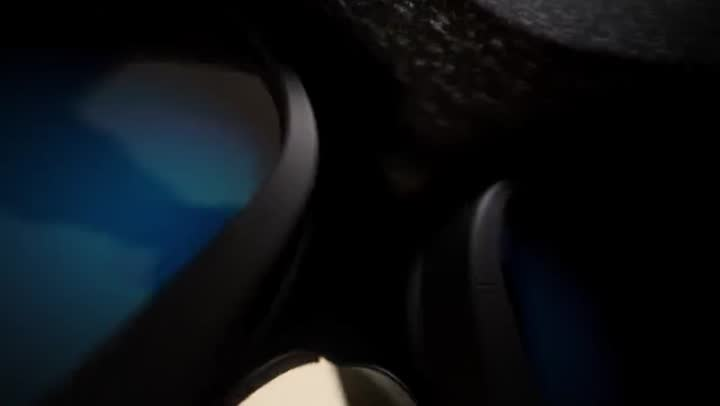
По форме
Мостик из формыКадр заканчивается круглой кнопкой, следующий начинается с похожей формы. Ищи повторяющиеся мотивы.
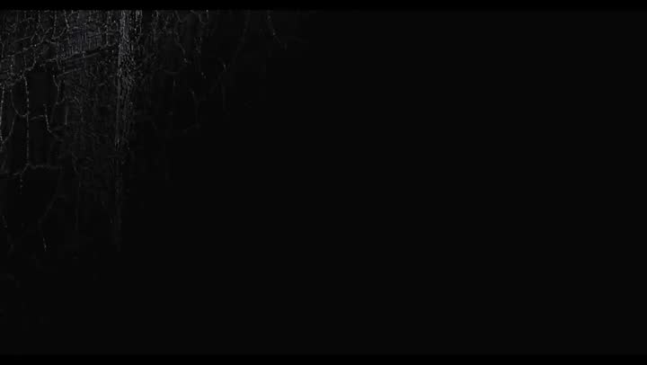
По цвету и свету
Мостик из светаСветовой рисунок или цветовое пятно переходит из кадра в кадр.
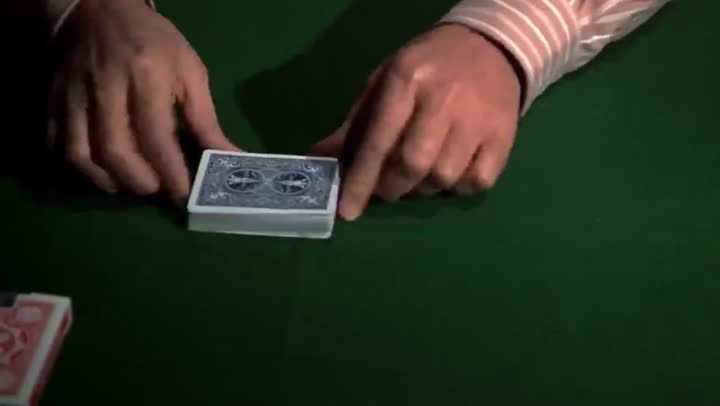
От детали
Деталь к общемуРезкий или плавный отъезд от детали к общему виду: где эта деталь живёт в реальности.
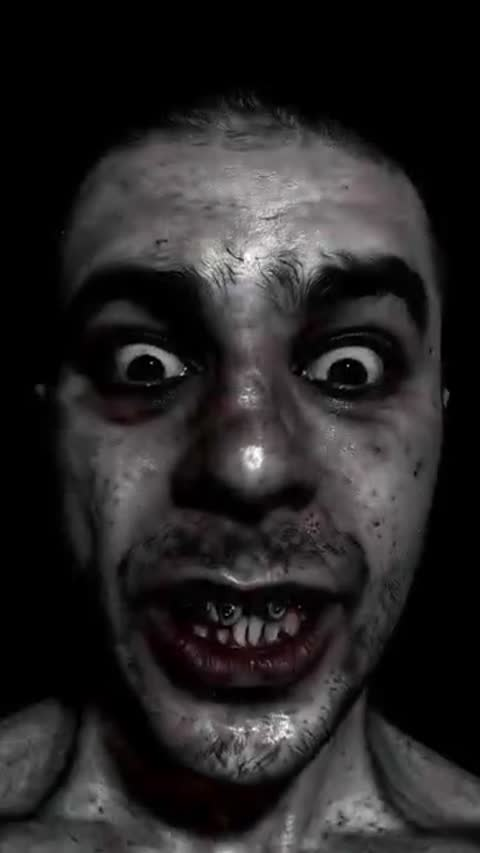
Невидимая склейка
Переход, которого не видноСклейка спрятана художественным или техническим приёмом. К этому стремятся почти все переходы.
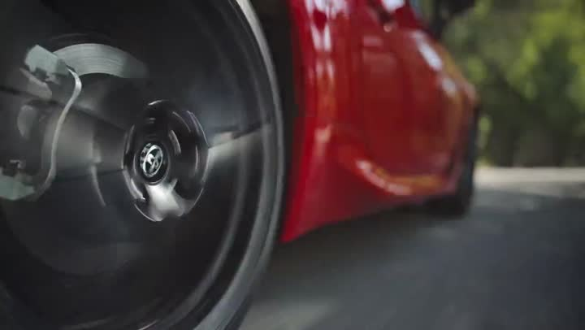
Параллельный монтаж
A и B одновременноДва события в разных местах идут параллельно и влияют друг на друга.
Как придумывать переходы
Обратный ходНачни с финала
Держи финальный кадр перед глазами и спрашивай: какой предыдущий кадр мог бы естественно привести сюда?
Вектор вниманияКуда смотрит зритель
После каждого кадра определи, где остановился взгляд, и начни следующее движение из этой точки.
НепрерывностьДвижение не рвётся
Главный объект сохраняет направление и скорость через склейку.
Спрашивай себя
Как этот кадр «рождается» из предыдущего?
Как идёт взгляд?
Не теряется ли фокус?
Частые ошибки
Перегруз кадров.
Отсутствие динамики.
Рассинхрон с музыкой и речью.
Переход ради перехода, без мотивации сюжетом.
Звук
ГолосЧисто и ровно
Шумоподавление (Enhance Speech, Voice Isolation), компрессор, разборчивость на динамике телефона.
МузыкаПод голосом
Без слов или с тихим вокалом. Приглушай под речью, поднимай в паузах.
ЭффектыЗвук на событие
Свуш на вылет графики, щелчок на слово, удар на смену сцены. Тише голоса.
Громкость
Около −14 LUFS для соцсетей и YouTube, пики не выше −1 dB. Проверь в наушниках и на динамике телефона.
Финал и экспорт
Посмотри без звука
Понятно ли по субтитрам и графике, о чём ролик?
Послушай, не глядя
Звук чистый, музыка не мешает, нет щелчков на склейках?
Покажи одному человеку
Не объясняй заранее. Если он не запомнил главную мысль, вернись к раскадровке.
Параметр
Значение
Формат
H.264, MP4
Размер
1080×1920 для вертикали, 1920×1080 для горизонтали
Частота кадров
Как у исходника, 25 или 30
Битрейт
VBR, 15–20 Мбит/с
Звук
AAC, 48 кГц, 320 кбит/с
Как показать ролик в портфолио
Финальное видео, затем сценарий и раскадровка, затем пара сцен «до и после» графики. Так видно, как ты думаешь, а не только результат.
Задание этапаСмонтируй ролик с минимум тремя разными типами переходов и сведи звук.
Для каждого перехода подпиши в раскадровке, чем он мотивирован. Если у тебя уже есть опыт, можешь взять свой исходник и идею вместо учебного задания, приложи два-три референса.